Siwei Zhang (张四维)
I am a Research Scientist @ Meta Reality Labs, working at the intersection of multi-modal generation, embodied intelligence, and human behavior modelling.
Previously, I was a PostDoc Researcher at the Computer Vision and Learning Group (VLG), ETH Zürich. I received my doctoral degree from ETH Zürich in 2024, advised by Professor Siyu Tang. Before that, I completed my Master's degree (2020) in Electrical Engineering and Information Technology at ETH Zürich, and my Bachelor's degree (2017) in Automation at Tsinghua University.
My research explores how embodied agents can understand and interact with the 3D world through multi-modality generative models and spatial intelligence.
* I am actively looking for industry or academic opportunities, feel free to reach out!
News
Publications
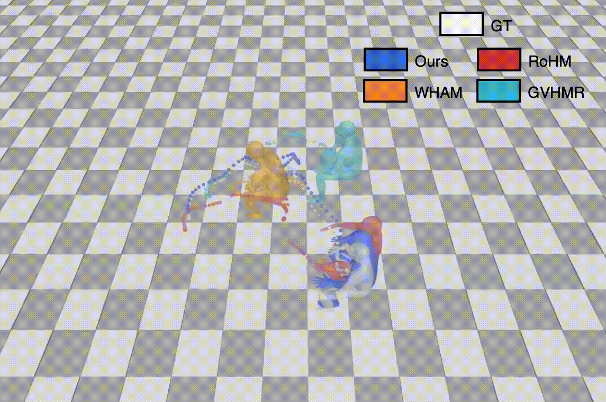
, Siwei Zhang, , ,
3DV, 2026
@article{qian2026moro,
author = {Qian, Zhiyin and Zhang, Siwei and Bhatnagar, Bharat Lal and Bogo, Federica and Tang, Siyu},
title = {Masked Modeling for Human Motion Recovery Under Occlusions},
booktitle = {3DV}
year = {2026},
}Given a monocular video captured from a static camera, MoRo robustly reconstructs accurate and physically plausible human motion, even under challenging occlusion scenarios.
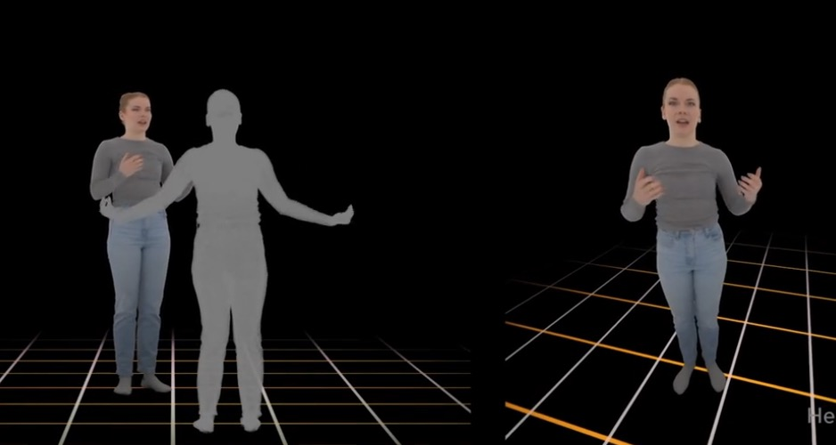
, Siwei Zhang, , ,
arXiv, 2026
@misc{ng2026sarahspatiallyawarerealtime,
title={SARAH: Spatially Aware Real-time Agentic Humans},
author={Evonne Ng and Siwei Zhang and Zhang Chen and Michael Zollhoefer and Alexander Richard},
year={2026},
eprint={2602.18432},
archivePrefix={arXiv},
primaryClass={cs.CV},
url={https://arxiv.org/abs/2602.18432},
}SARAH generates full-body conversational motion that is both conversationally-aware and spatially responsive to the user. Our causal, lightweight architecture enables real-time deployment on a live VR headset.
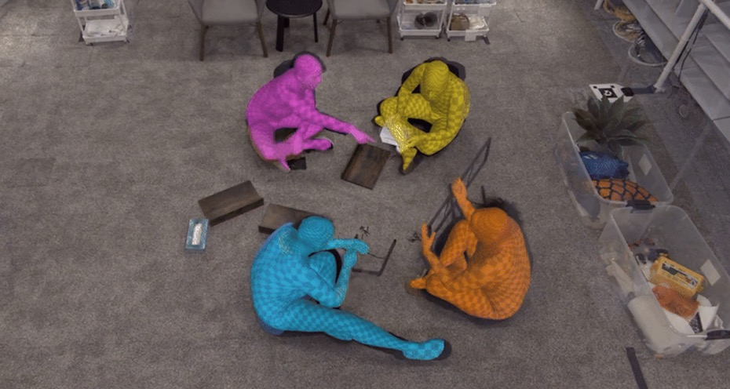
Embody 3D Team
arXiv, 2025
@techreport{mclean2025embody3d,
title = {Embody 3D: A Large-scale Multimodal Motion and Behavior Dataset},
author = {Claire McLean and Makenzie Meendering and Tristan Swartz and Orri Gabbay and Alexandra Olsen and Rachel Jacobs and Nicholas Rosen and Philippe de Bree and Tony Garcia and Gadsden Merrill and Jake Sandakly and Julia Buffalini and Neham Jain and Steven Krenn and Moneish Kumar and Dejan Markovic and Evonne Ng and Fabian Prada and Andrew Saba and Siwei Zhang and Vasu Agrawal and Tim Godisart and Alexander Richard and Michael Zollhoefer},
institution = {arXiv},
year = {2025},
type = {Technical Report},
note = {arXiv preprint},
url = {https://arxiv.org/pdf/2510.16258},
}The Embody 3D dataset is a large-scale multimodal dataset with over 500 hours of 3D human motion data, text annotations, and audio.
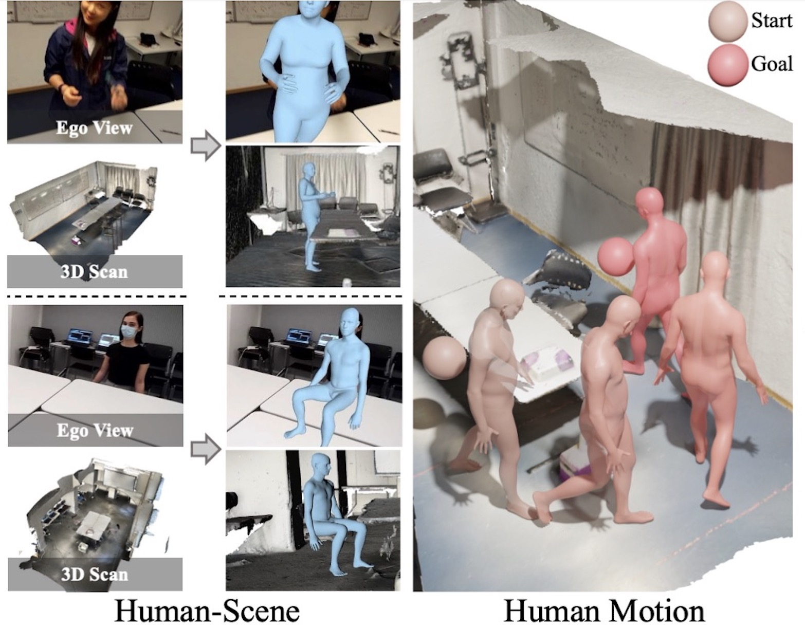
, Siwei Zhang, , , ,
ICCV, 2025 Highlight
@inproceedings{ICCV25:VolumetricSMPL,
title={{VolumetricSMPL}: A Neural Volumetric Body Model for Efficient Interactions, Contacts, and Collisions},
author={Mihajlovic, Marko and Zhang, Siwei and Li, Gen and Zhao, Kaifeng and M{\"u}ller, Lea and Tang, Siyu},
booktitle={Proceedings of the IEEE/CVF International Conference on Computer Vision (ICCV)},
year={2025}
}VolumetricSMPL is a lightweight, plug-and-play extension for SMPL(-X) models that adds volumetric functionality via Signed Distance Fields (SDFs). With minimal integration—just a single line of code—users gain access to fast and differentiable SDF queries, collision detection, and self-intersection resolution.
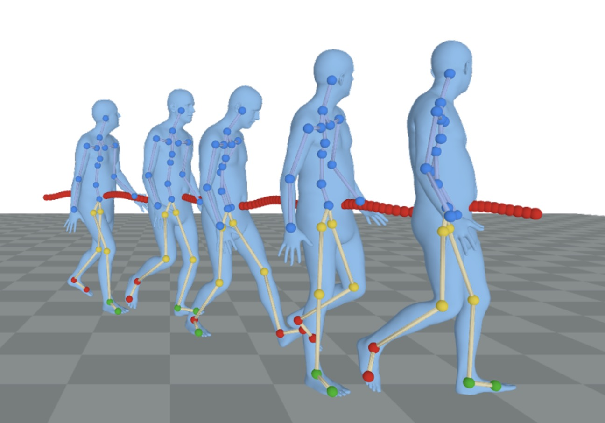
Siwei Zhang, , , , , ,
CVPR, 2024 Oral Presentation
@inproceedings{zhang2024rohm,
title={RoHM: Robust Human Motion Reconstruction via Diffusion},
author={Zhang, Siwei and Bhatnagar, Bharat Lal and Xu, Yuanlu and Winkler, Alexander and Kadlecek, Petr and Tang, Siyu and Bogo, Federica},
booktitle={CVPR},
year={2024}
}Conditioned on noisy and occluded input data, RoHM reconstructs complete, plausible motions in consistent global coordinates.
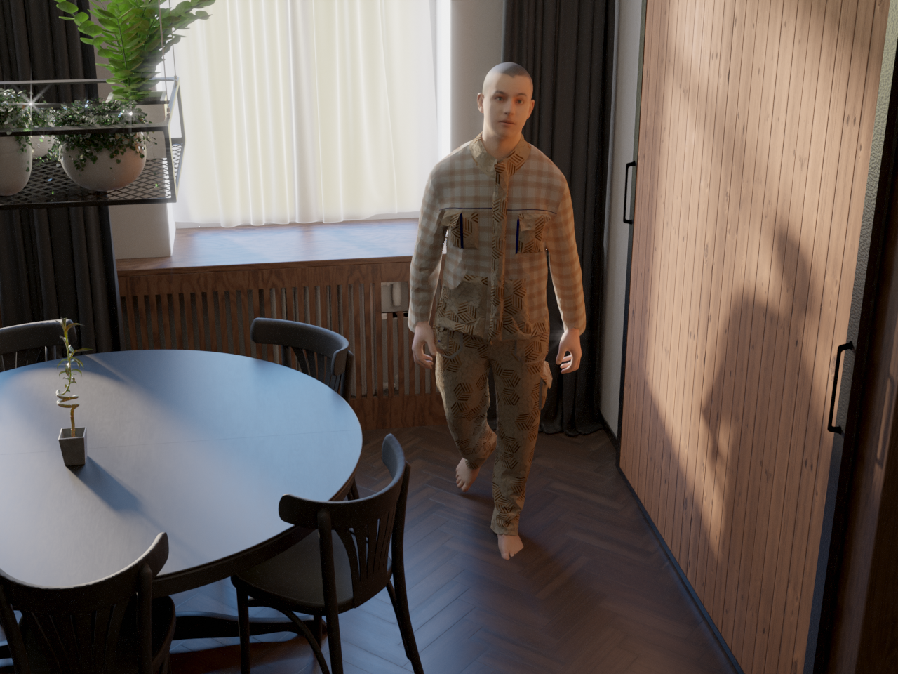
, , Siwei Zhang, , , , ,
CVPR, 2024 Oral Presentation
@inproceedings{li2024egogen,
title={EgoGen: An Egocentric Synthetic Data Generator},
author={Li, Gen and Zhao, Kaifeng and Zhang, Siwei and Lyu, Xiaozhong and Dusmanu, Mihai and Zhang, Yan and Pollefeys, Marc and Tang, Siyu},
booktitle={CVPR},
year={2024}
}EgoGen is new synthetic data generator that can produce accurate and rich ground-truth training data for egocentric perception tasks.
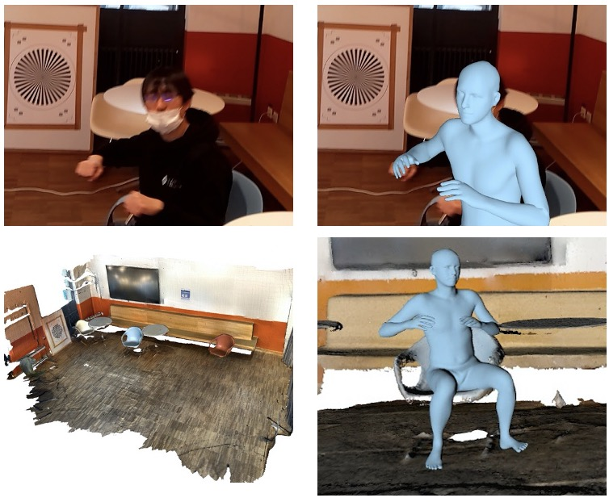
Siwei Zhang, , , , ,
ICCV, 2023 Oral Presentation
@inproceedings{zhang2023probabilistic,
title = {Probabilistic Human Mesh Recovery in 3D Scenes from Egocentric Views},
author = {Siwei Zhang, Qianli Ma, Yan Zhang, Sadegh Aliakbarian, Darren Cosker, Siyu Tang},
booktitle = {Proceedings of the IEEE/CVF International Conference on Computer Vision (ICCV)},
pages = {7989--8000},
month = oct,
year = {2023}
}Generative human mesh recovery for images with body occlusion and truncations: scene-conditioned diffusion model + collision-guided sampling = accurate pose estimation on observed body parts and plausible generation of unobserved parts.
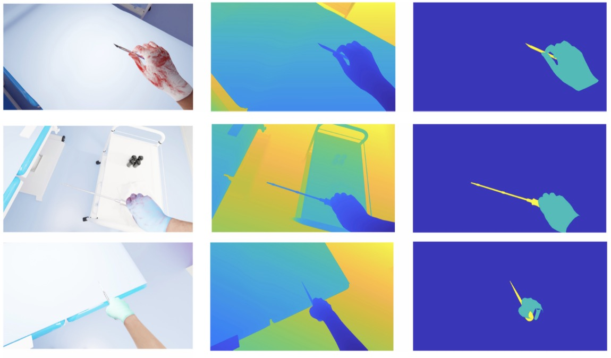
*, *, Siwei Zhang, ,
MICCAI, 2023 Oral presentation
@inproceedings{wang2023pov,
title={POV-Surgery: A Dataset for Egocentric Hand and Tool Pose Estimation During Surgical Activities},
author={Wang, Rui and Ktistakis, Sophokles and Zhang, Siwei and Meboldt, Mirko and Lohmeyer, Quentin},
booktitle={International Conference on Medical Image Computing and Computer-Assisted Intervention},
pages={440--450},
year={2023}
}POV-Surgery is a synthetic egocentric dataset focusing on hand pose estimation with different surgical gloves and orthopedic surgical instruments, featuring RGB-D videos with annotations for activieis, 3D/2D hand-object pose, and 2D hand-object segmentation masks.

Siwei Zhang, , , , , , ,
ECCV, 2022
@inproceedings{zhang2022egobody,
title={Egobody: Human body shape and motion of interacting people from head-mounted devices},
author={Zhang, Siwei and Ma, Qianli and Zhang, Yan and Qian, Zhiyin and Kwon, Taein and Pollefeys, Marc and Bogo, Federica and Tang, Siyu},
booktitle={European Conference on Computer Vision},
pages={180--200},
year={2022},
organization={Springer}
}A large-scale dataset of accurate 3D body shape, pose and motion of humans interacting in 3D scenes, with multi-modal streams from third-person and egocentric views, captured by Azure Kinects and a HoloLens2.
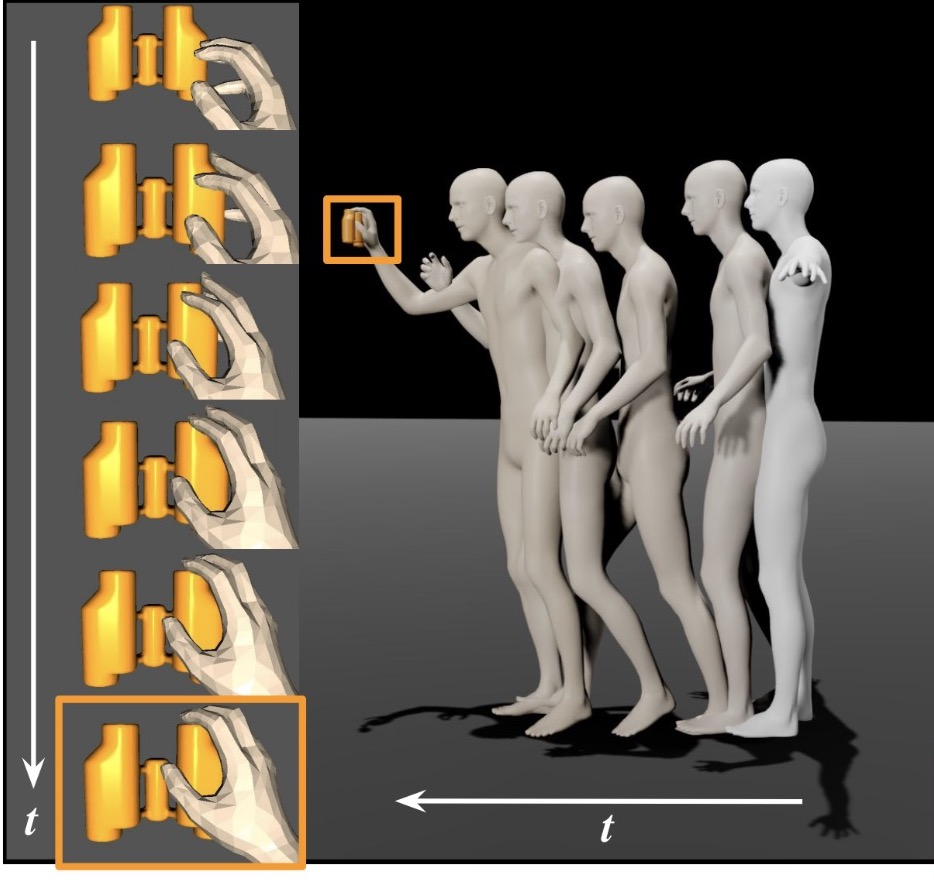
*, *, , Siwei Zhang, , ,
(* denotes equal contribution)
ECCV, 2022
@inproceedings{wu2022saga,
title={Saga: Stochastic whole-body grasping with contact},
author={Wu, Yan and Wang, Jiahao and Zhang, Yan and Zhang, Siwei and Hilliges, Otmar and Yu, Fisher and Tang, Siyu},
booktitle={European Conference on Computer Vision},
pages={257--274},
year={2022},
organization={Springer}
}Starting from an arbitrary initial pose, SAGA generates diverse and natural whole-body human motions to approach and grasp a target object in 3D space.
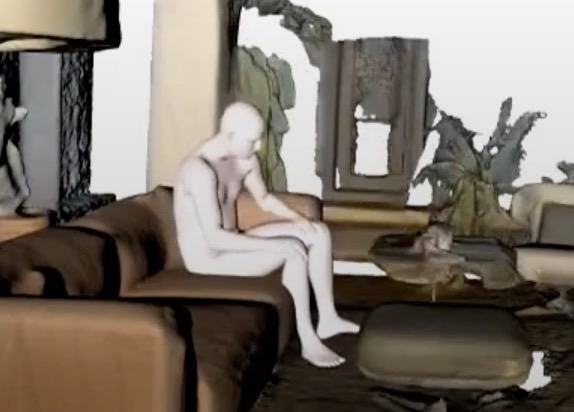
Siwei Zhang, , , ,
ICCV, 2021 Oral Presentation
@inproceedings{zhang2021learning,
title={Learning motion priors for 4d human body capture in 3d scenes},
author={Zhang, Siwei and Zhang, Yan and Bogo, Federica and Pollefeys, Marc and Tang, Siyu},
booktitle={Proceedings of the IEEE/CVF International Conference on Computer Vision},
pages={11343--11353},
year={2021}
}LEMO learns motion priors from a larger scale mocap dataset and proposes a multi-stage optimization pipeline to enable 3D motion reconstruction in complex 3D scenes.
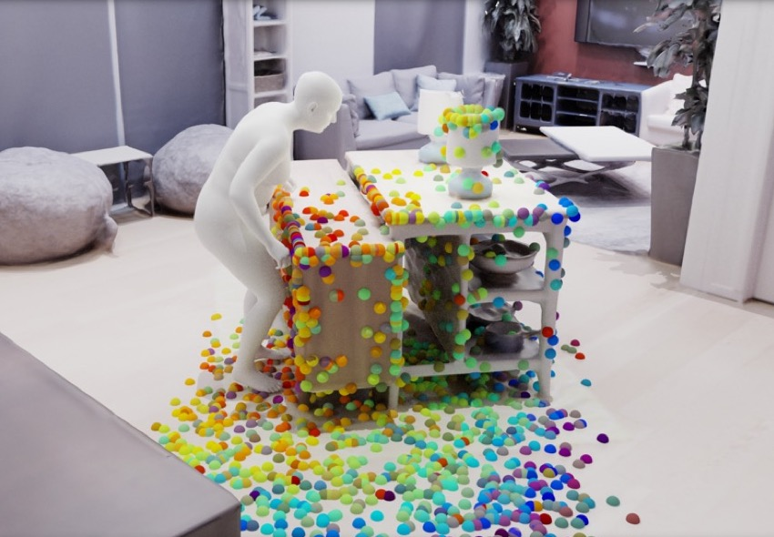
Siwei Zhang, , , ,
3DV, 2020
@inproceedings{zhang2020place,
title={PLACE: Proximity learning of articulation and contact in 3D environments},
author={Zhang, Siwei and Zhang, Yan and Ma, Qianli and Black, Michael J and Tang, Siyu},
booktitle={2020 International Conference on 3D Vision (3DV)},
pages={642--651},
year={2020},
organization={IEEE}
}An explicit representation for 3D person-scene contact relations that enables automated synthesis of realistic humans posed naturally in a given scene.
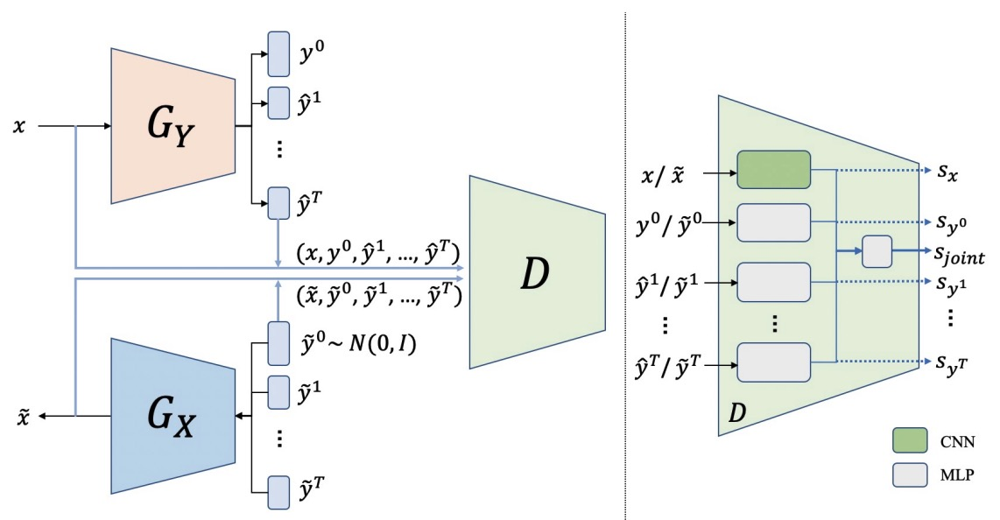
Siwei Zhang, , ,
WACV, 2021
@inproceedings{zhang2021facial,
title = {Facial Emotion Recognition with Noisy Multi-task Annotations},
author = {Zhang, Siwei and Huang, Zhiwu and Paudel, Danda Pani and Gool, Luc Van},
booktitle = {Winter Conference on Applications of Computer Vision (WACV)},
month={jan},
year = {2021}
}To reduce human labelling effort on multi-task labels, we introduce a new problem of facial emotion recognition with noisy multi-task annotations.
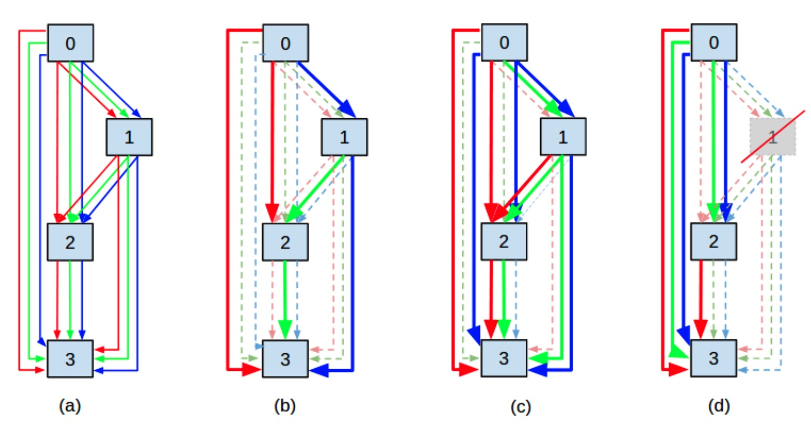
*, *, , Siwei Zhang,
(* denotes equal contribution)
AAAI, 2021
@inproceedings{wu2021neural,
title = {Neural architecture search as sparse supernet},
author = {Wu, Yan and Liu, Aoming and Huang, Zhiwu and Zhang, Siwei and Van Gool, Luc},
booktitle = {Proceedings of the AAAI Conference on Artificial Intelligence},
volume={35},
number={12},
pages={10379--10387},
year = {2021}
}We model the NAS problem as a sparse supernet using a new continuous architecture representation with a mixture of sparsity constraints.
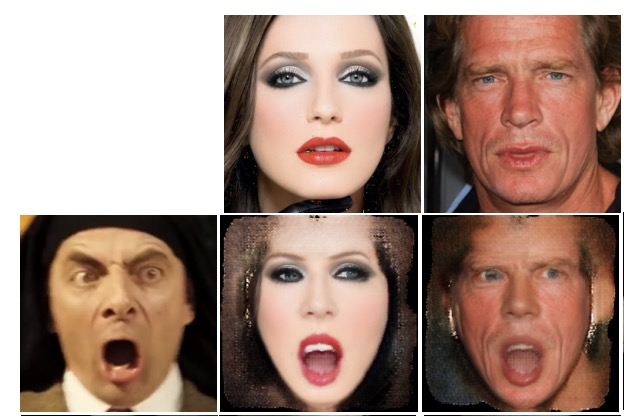
, Siwei Zhang, , , ,
BMVC, 2019 Spotlight Presentation
@inproceedings{zhang2019one,
title = {One-shot Face Reenactment},
author = {Zhang, Yunxuan and Zhang, Siwei and He, Yue and Li, Cheng and Loy, Chen Change and Liu, Ziwei},
booktitle = {BMVC},
month = September,
year = {2019}
}We propose a novel one-shot face reenactment learning system, that is able to disentangle and compose appearance and shape information for effective modeling.
Academic Services
- Main organizer of Humans workshop at CVPR 2024/2025.
- Main organizer of Human Body, Hands, and Activities from Egocentric and Multi-view Cameras workshop and EgoBody benchmark at ECCV 2022.
- Serve as reviewer for ICCV, CVPR, ECCV, 3DV, AAAI, and SIGGRAPH.